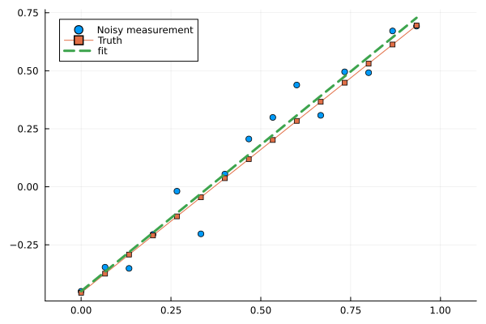
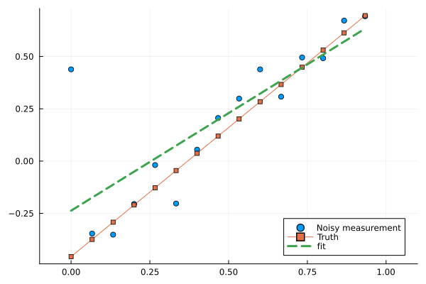

Fundamentals
This page describes some of the fundamental ideas on which RetrievalToolbox is built on. New users are strongly encouraged to read through the following list of items, as it will hopefully clarify how this software is meant to be used.
Overview
RetrievalToolbox is not a retrieval algorithm. The software library provides types from which objects can be created. These objects represent concepts that are commonly used in many retrieval (and related) applications and algorithms. RetrievalToolbox also provides many functions that use these objects to perform various calculations. Overall, the different object types and functions are designed to be part of a user-written application with the aim to produce modelled radiances as viewed by a hyperspectral-type spectroscopic instrument.
Users are required to write their own applications (forward models) to make use of RetrievalToolbox's capabilities. To make this initial step easier for new users, the main Github page has links to tutorials as well as example implementations that showcase how RetrievalToolbox can be used to build relevant applications.
Details
How to Build a Retrieval Algorithm
This section here will illustrate how the software library is designed to be used in order to build a retrieval algorithm. Note that the emphasis is on "illustrate" (the code below does will not run), since even the most basic retrieval algorithm requires a moderate amount of set-up and arranging of the appropriate inputs.
At the most basic level, users must provide the following components to build a simple retrieval algorithm: a solver object, a state vector, and a forward model. The forward model may be any user-defined function that takes only the state vector object (see State Vector Types) as its mandatory argument, along with any optional keyword arguments. It also must return a Bool (true or false), since the solver routines check whether the forward model was executed successfully or not.
# Load the module
using RetrievalToolbox; const RE = RetrievalToolboxfunction forward_model!(
sv::RE.AbstractStateVector;
rad::RE.Radiance, jac::RE.Radiance)::Bool
# .. calculate instrument-level observation based on `sv`
# and store the result in `rad`, Jacobians in `jac`
return true
endThe exclamation mark in the function name is a Julia naming convention and signifies that the function is expected to alter (mutate) one or more of the function arguments. RetrievalToolbox has no further requirements regarding the function itself, users may add any number of keyword arguments to control the execution of their forward model function as long as the state vector sv is the first and only non-keyword argument.
Next, we must build a solver object. We will use the iterative maximum a-posteriori inversion scheme, which maximizes the posterior probability distribution in the Bayesian sense, given some prior constraint.
solver = RE.IMAPSolver(
forward_model!, # Our forward model defined above
sv, # The state vector [NOT DEFINED IN THIS EXAMPLE]
Sa, # The prior covariance matrix [NOT DEFINED IN THIS EXAMPLE]
10, # Number of iterations before we give up
1.0, # Δσ² factor to control convergence
dispersions, # Dispersion objects [NOT DEFINED IN THIS EXAMPLE]
indices, # Which indices in the placeholder does each window utilize? [NOT DEFINED IN THIS EXAMPLE]
radiance, # Radiance array for current iteration (must be the same we use in `forward_model!`)
jacobians, # Jacobian placeholder [NOT DEFINED IN THIS EXAMPLE]
measurement, # The instrument-level observation we want to match [NOT DEFINED IN THIS EXAMPLE]
noise # The instrument-level noise-equivalent radiance [NOT DEFINED IN THIS EXAMPLE]
)As is evident in the above code snippet, even the most basic set-up would require a handful of quantities to be created before they can be ingested into the new solver object. For the sake of keeping this section short, we will skip that for now.
Now the only thing left to do is to call the function that performs the iterations. To manually take a step in the inversion, we can simply write:
RE.next_iteration!(solver; fm_kwargs=(rad=radiance,jac=jacobians))The next_iteration! function takes our solver object and performs a step to minimize the cost function (see Rodgers 2000, Chapter 4). As long as we have done everything correctly, which mostly means that the Jacobians are calculated correctly, the state vector sv will be adapted such that re-running the forward model will yield a result that better matches the observation (in our case, the supplied: measurement).
When building a retrieval algorithm, our task is thus the following:
- Collect all required inputs from the various data sources (L1B, auxiliary files, instrument parameters, climatology, ..) and prepare them into the appropriate containers. Radiance measurements must be copied into
Radiance-type arrays, dispersion objects and noise level vectors must be created in accordance to instrument specifications. - Create a state vector that reflects the character of the retrieval problem, and set appropriate prior and first-guess values, along with reasonable values for prior covariance.
- Write a forward model function that computes the instrument-level radiance to be compared against a measurement. This function must not only calculate the radiances, but also the partial derivatives of the radiances with respect to each state vector element.
- Initialize a solver using the various objects we just described and iterate with the provided function until a satisfactory outcome is obtained.
Example: Fitting a line with RetrievalToolbox
It may be helpful to review the ideas of the preceding section through an actual example that can be run. In the following example, we will handle a contrived situation in which we try to fit a line through a number of points. This example has no meaningful equivalent in the world of atmospheric trace gas retrievals, but one could think of measuring a linear, spectral illumination gradient with a detector that is subject to random noise. We will create a forward model that simply produces $y = k\cdot x + d$, where $y$ represents the modeled radiance.
The following code snippets can be executed, so users may copy the contents into an active Julia session or notebook and run them! Note that users might need to install additional packages into their Julia environment to make this work properly.
First, a few modules need to be loaded, including the RetrievalToolbox itself along with some others that provide plotting capability.
# Load needed packages
using RetrievalToolbox; const RE = RetrievalToolbox
using LinearAlgebra
using Plots; default(titlefontsize=10, labelfontsize=8)
using Random
using UnitfulIn the next step, we define now many points we want to produce in this example that we want to fit later on. Readers may adjust this number, and the following code will adjust to the new value accordingly.
N_point = 15; # Number of points in the exampleFor this example, we make a choice for our ficticious instrument, which shall cover the spectral wavelength range between 0 µm and 1 µm, and calculate the point spacing based on the number N_points which was defined above.
Further, we also create two important objects that define our instrument. The SpectralWindow object, which sets the extent and resolution of our model calculations. We set the lower and upper bounds, and create a model grid simply based on the spacing. As per requirement of the SpectralWindow, our model grid has to include points beyond the desired spectral bounds, so we add one point on either side to fulfil that requirement. The SimplePolynomialDispersion object (see also: Core Concepts) is then needed to let the software know how spectral samples (e.g. detector pixels) translate to wavelengths.
spacing = 1.0 / (N_point - 1) # Calculate point spacing
# Create spectral window object
swin = RE.SpectralWindow(
"example_window", # plain-text name for future reference
0.0, # Lower wavelength bound
1.0, # Upper wavelength bound
0. - spacing:spacing:1.0 + spacing |> collect, # the underlying high-resolution grid
u"µm", # The wavelength unit to be used
0.0 # The reference wavelength for spectrally dependent quantities (e.g. slopes)
)
# Create dispersion object, linked to spectral window above
disp = RE.SimplePolynomialDispersion(
[0.0, 1.0/N_point] * u"µm", # polynomial coefficients, in ascending order
0:N_point - 1,
swin
)This is all we need for our simple example: we have created a dispersion disp that defines a linear dispersion with following coefficients:
dispSimplePolynomialDispersion
attached to SpectralWindow: example_window
coefficients: [0.0, 0.06666666666666667]
detector samples: 0:14
Now it is time to define our state vector, the quantity that controls the evaluation of our forward model. In order to fit a line through some points, we can luckily make use of a pre-existing structure: the zero-level offset. In real atmospheric trace gas retrievals, the zero-level offset (ZLO) can be a handy element to model radiance that is additive to all other radiance calculations. It can be used as a low-order approximation to parasitic stray light, for example. For our example, it is highly convenient, since it can produce a line to fit some points.
In order to do so, we go ahead and create two state vector elements, one for the offset at zero (d), and one for the slope (k). We then combine those two into a vector and create the RetrievalStateVector object. State vector elements in RetrievalToolbox have to be initialized with some parameters that define their prior and first-guess values, as well as their (Gaussian) prior covariance. This particular type of state vector element, called ZeroLevelOffsetPolynomialSVE, also requires to be attached to a SpectralWindow, since the software allows different ZLOs to be calculated for different spectral windows separately.
zlo0 = RE.ZeroLevelOffsetPolynomialSVE(
swin, # Spectral window
0, # Coefficient order
u"µm", # Spectral unit
1.0, # Radiance unit
0.0, # First guess
0.0, # Prior value
1.0 # Prior covariance
)
zlo1 = RE.ZeroLevelOffsetPolynomialSVE(
swin, # Spectral window
1, # Coefficient order
u"µm", # Spectral unit
1.0, # Radiance unit
1.0, # First guess
1.0, # Prior value
1.0 # Prior covariance
)
sv = RE.RetrievalStateVector([zlo0, zlo1]) State Vector (current)
┌────┬───────────────────────────────────────────────────┬─────┬───────┐
│ #1 │ ZeroLevelOffsetPolynomialSVE (0) [example_window] │ 0.0 │ │
│ #2 │ ZeroLevelOffsetPolynomialSVE (1) [example_window] │ 1.0 │ μm^-1 │
└────┴───────────────────────────────────────────────────┴─────┴───────┘
The following step creates a buffer object, which is needed to hold various quantities from a calculation. Details are not yet important here, it is sufficient to know that RetrievalToolbox makes heavy use of pre-allocated arrays to minimize the number of allocations that would otherwise slow down the processing of many measurements.
rt_buf = RE.ScalarRTBuffer(
Dict(swin => disp),
RE.ScalarRadiance(Float64, N_point),
Dict(sve => RE.ScalarRadiance(Float64, N_point) for sve in sv.state_vector_elements),
Dict(swin => Int[]),
1.0
);As mentioned before, one of the most crucial parts of a RetrievalToolbox implementation is the user-defined forward model. In this exercise, we can reduce the forward model to four simple function calls:
We first calculate the mapping between spectral window/dispersion and the radiance buffer[1].
We make sure that there is no previous result stored still in the
rt_buf.radiancearray, so we zero it out.We calculate the radiances by adding the contributions $y = y + d$ and then $y = y + k\cdot x$.
We then calculate the Jacobians (partial derivatives) $\partial y / \partial d = 1$ and $\partial y / \partial k = x$.
Note that both radiance and derivatives are calculated automatically by the appropriate functions inside of RetrievalToolbox, so we do not need to write them explicitly.
function forward_model!(
sv::RE.AbstractStateVector;
rt_buf::RE.ScalarRTBuffer
)::Bool
# Need this to calculate index positions to move from
# dispersion -> buffer array
RE.calculate_indices!(rt_buf, [swin]) # Step (1)
# Zero out radiance container!
rt_buf.radiance[:] .= 0 # Step (2)
# Calculates the radiances in rt_buf.radiance by adding them to
# the existing values. This is essentially our `y = y + k*x + d`
for sve in sv.state_vector_elements
RE.apply_radiance_correction!(rt_buf, sve) # Step (3)
end
# Calculates the Jacobians in rt_buf.jacobians;
# the partial derivatives w.r.t. `k` and `d`; ∂y/∂k=x and ∂y/∂d=1
for sve in sv.state_vector_elements
RE.calculate_jacobian!(rt_buf, sve) # Step (4)
end
# Forward model functions must return either true or false. If they return false,
# further steps in the inversion process are not executed.
return true
endforward_model! (generic function with 1 method)It is now time to create our synthetic "measurement", a series of points along a line, that we also perturb a little according to some chosen noise level. The cell below defines a few constants from which we calculate our points through which we will then fit a line. Feel free to change these values! Larger values for σ will produce a more noisy measurement and the resulting fit will be worse.
σ = 0.1; # Noise level
k = 1.2345 # The true slope
d = -0.4567 # The true offset at zero# Creates a wavelength, which we can use as the `x` in our `y = k * x + d`
_, x = calculate_grid_from_dispersion(disp, swin)
# Calculate the synthetic measurement (without noise)
meas_true = k .* x .+ d;
# Add some noise by sampling a normal distribution and scale it by our noise `σ`
Random.seed!(1) # Make sure this is reproducible
meas_noisy = meas_true[:] .+ randn(size(meas_true)) .* σ;
# Create the theoretical noise, which is the expected per-pixel standard deviation
noise_eq_rad = fill(σ, size(meas_noisy));We can now assemble the solver object with all the components that we created.
solver = RE.IMAPSolver(
forward_model!, # Our forward model defined above
sv, # The state vector
Diagonal(RE.get_prior_covariance(sv)), # The (diagonal) prior covariance matrix
-1, # Number of iterations before we give up (not used here)
0.0, # Δσ² factor to control convergence (not used here)
Dict(swin => disp), # Dispersion objects
rt_buf.indices, # Which indices in the placeholder does each window utilize?
rt_buf.radiance, # Radiance array
rt_buf.jacobians, # Jacobian placeholder
Dict(disp => meas_noisy), # The instrument-level observation we want to match
Dict(disp => noise_eq_rad) # The instrument-level noise σ
);The following steps perform the inversion. Since this is a fully linear problem, meaning that the derivatives do not depend on the state vector itself, the solution is found in exactly one single step. We call on the IMAP solver to perform that one iteration via next_iteration! and then once more evaluate the forward model such that the model radiance is calculated with the updated state vector and store in rt_buf.radiance.
# Re-set the state vector (not needed, but helpful if this code is run multiple times)
RE.reset!(sv)
# Perform the next step (this updates the state vector!)
RE.next_iteration!(solver; fm_kwargs=(rt_buf=rt_buf,))
# Evaluate the forward model with the updated state vector
solver.forward_model(solver.state_vector; rt_buf=rt_buf)Plot the results! Note that we make use of the get_measured, get_modeled and get_wavelength helper functions which let us extract those quantities without us having to think too much about indices and buffers. RetrievalToolbox has many of these helper functions which compactify a lot of tasks that might otherwise be typed out very often.
scatter(RE.get_wavelength(solver), RE.get_measured(solver), label="Noisy measurement")
plot!(RE.get_wavelength(solver), meas_true, label="Truth", marker=:square, markersize=3)
plot!(RE.get_wavelength(solver), RE.get_modeled(solver), label="fit", linestyle=:dash, width=3)
xlims!(-0.1, 1.1)GKS: cannot open display - headless operation mode active
We can see in the plot that best-fit line (thick dashed line, green) as compared to the truth (thin line, squares, orange) before application of the noise (noisy data are the blue circles).
RetrievalToolbox does not only provide means for fitting a model to measurements. Since many of the quantities in the inversion process persist in memory until explicitly deleted by users, one can easily do error analysis for example. The below function prints a summary of the posterior state vector, including the best-fit values for our offset at zero d (ZeroLevelOffsetPolynomialSVE (0)) and the slope k (ZeroLevelOffsetPolynomialSVE (1)), along with the theoretical uncertainties on those values. Compare the values shown there to the ones initially picked to produce the synthetic measurement!
RE.print_posterior(solver) Posterior state vector
┌───────────────────────────────────────────────────┬───────┬───────────┬─────────────┬─────────────┬─────────────┬──────────┐
│ Name │ Units │ Value │ Uncertainty │ Uncertainty │ Uncertainty │ AK │
│ │ │ │ (total) │ (smoothing) │ (noise) │ │
├───────────────────────────────────────────────────┼───────┼───────────┼─────────────┼─────────────┼─────────────┼──────────┤
│ ZeroLevelOffsetPolynomialSVE (0) [example_window] │ │ -0.450063 │ 0.0489587 │ 0.00441796 │ 0.048759 │ 0.997603 │
│ ZeroLevelOffsetPolynomialSVE (1) [example_window] │ μm^-1 │ 1.26242 │ 0.0892068 │ 0.00878068 │ 0.0887736 │ 0.992042 │
└───────────────────────────────────────────────────┴───────┴───────────┴─────────────┴─────────────┴─────────────┴──────────┘Mutability of Objects
In scientific computing, many objects (think mostly: arrays) are mutable. This is also true in RetrievalToolbox, where mutable objects are used throughout the software library. Mutability refers to the fact that values can change after initialization. In general, mutability makes it more difficult to read or understand program code as one has to track how and if object values change throughout the program runtime.
The main advantage of mutability is the single reason why it is used heavily in RetrievalToolbox: modifying objects in-place leads to significant performance gain since we can re-use already created objects rather than having to re-allocate them in memory. Think of an object that represents the per-layer optical properties due to gas absorption, which may be an array with 30,000 rows and 25 columns. If we set up a pipeline where we want to perform retrievals for an entire orbit's worth of scenes, we would have to create this array potentially hundreds of thousands of times. In Julia, we also cannot manually de-allocate unneeded objects, so these arrays would remain in memory until a garbage collector sweep removes them. If we treat that array as a re-usable container, however, we need to allocate it only once and then fill it with meaningful values when needed.
This choice comes with the obvious downside that it is possible to alter the contents of objects in a way that is not meaningful in the context of a retrieval algorithm. For example, referring back to the section above we can easily edit the contents of the dispersion object disp without seeing an error raised or any other complaints:
disp.index[1] = min(10, N_point - 1)10If we were to attempt to fit the line again, we would see somewhat unpredicted behavior, since we now changed how the instrument model relates detector-level spectral samples to those spectral points within our desired spectral window.
RE.reset!(sv)
RE.next_iteration!(solver; fm_kwargs=(rt_buf=rt_buf,))
solver.forward_model(solver.state_vector; rt_buf=rt_buf)
scatter(RE.get_wavelength(solver), RE.get_measured(solver), label="Noisy measurement")
plot!(RE.get_wavelength(solver), meas_true, label="Truth", marker=:square, markersize=3)
plot!(RE.get_wavelength(solver), RE.get_modeled(solver), label="fit", linestyle=:dash, width=3)
xlims!(-0.1, 1.1)
In Julia, native arrays and arrays that derive from the native abstract array type, are always mutable, therefore users will always be able to modify array-type fields of any RetrievalToolbox type objects.
Many objects in RetrievalToolbox are mutable, and therefore can be altered after they have been initialized. This is deliberately part of the software design and intended behavior as it allows highly performant retrieval pipelines in which objects are re-used. Users must always aim to write their code carefully to avoid unwanted and accidental modifications of objects and to be diligent about how and when to modify objects.
Utilizing Buffers
As part of the "mutability paradigm", RetrievalToolbox employs so-called buffers. One can think of them as structured containers that include correctly-sized arrays. These buffers are to be allocated ahead of running the actual forward model calculations or the retrieval. Several crucial functions in RetrievalToolbox explicitly require some buffer type object, hence the use of these buffers is not optional.
A typical workflow for a retrieval problem, in which we want to perform gas retrievals for many scenes, could look like the following:
- Create atmospheric constituents (gases, aerosols)
- Create spectral window(s) and dispersion(s) for the range(s) of interest
- Create state vector elements and collect them into a state vector
- Create the buffer(s) (requires the objects from 1-3)
- Write forward model function
- Create a solver object (using all of the above)
- Loop through scenes
- Copy measurement of the current scene into solver (overwriting!)
- Adjust prior and first guess values of the state vector, then re-set state vector (overwriting!)
- Copy atmospheric data (meteorology, gas profiles etc.) into buffer (overwriting!)
- Run inversion until convergence is reached
- Copy state vector contents into some appropriate collection to store per-scene results
- Repeat until all scenes are processed
Details on the different buffer types are found at Buffer types.
Units
Physical units are used within RetrievalToolbox to make sure that necessary unit conversions are performed when needed. Many objects will require an explicit unit to be supplied during construction, and most objects require specific units that match the quantity. This generally allows users to mix and match compatible units and choose whichever units are more convenient for some particular use case. For example, the volume mixing ratio for CO₂ may be stated in ppm, whereas the mixing ratio for CH₄ could be stated in ppb. The internal routines inside RetrievalToolbox perform the appropriate conversions when needed.
For example, when creating a state vector element that controls the surface pressure, users must supply a pressure-type unit, such as Pa, hPa or Torr.
using Unitful
using RetrievalToolbox; const RE = RetrievalToolbox
sve_psurf = RE.SurfacePressureSVE(
u"hPa", # unit
1000.0, # first guess
1000.0, # prior value
400.0 # prior covariance
)Surface pressure SVE
First guess: 1000.0
Prior value: 1000.0
Prior covariance: 400.0
Last iteration: 1000.0
Using an incompatible unit will throw an error:
sve_psurf = RE.SurfacePressureSVE(
u"km", # WILL NOT WORK: km is not compatible with a unit of type kg m⁻¹ s⁻²
1000.0, # first guess
1000.0, # prior value
400.0 # prior covariance
)Note that the use of units is not fully automatic, users must be aware of where unit information is stored in the various objects. Let us think of a situation where two spectral windows are present, swin1 and swin2:
using Unitful
using RetrievalToolbox; const RE = RetrievalToolbox
swin1 = RE.SpectralWindow(
"window1", # plain-text name for future reference
1.5, # Lower wavelength bound
1.7, # Upper wavelength bound
1.4:0.1:1.8 |> collect, # the underlying high-resolution grid
u"µm", # The wavelength unit to be used
1.6 # The reference wavelength for spectrally dependent quantities (e.g. slopes)
)
swin2 = RE.SpectralWindow(
"window2", # plain-text name for future reference
800., # Lower wavelength bound
900., # Upper wavelength bound
780.:1.:910. |> collect, # the underlying high-resolution grid
u"nm", # The wavelength unit to be used
850. # The reference wavelength for spectrally dependent quantities (e.g. slopes)
)Note that swin1 uses µm, and swin2 uses nm. If we wanted to find out which of those two windows is lower in spectral space, we may instinctively write something like this:
swin1.ww_min < swin2.ww_maxtrueThe result above, true, suggests that indeed the lower bound of swin1 is lower than the lower bound of swin2. That is, of course, not true when accounting for the fact that the wavelength values inside of swin1 are in µm, and those within swin2 are in nm. Users must write the following instead:
swin1.ww_min * swin1.ww_unit < swin2.ww_min * swin2.ww_unitfalseMultiplying a value with a Unitful unit produces a quantity with an attached physical unit, and the comparison will respect the units (if compatible) and produce the correct answer.
To learn more about units and how they are used in RetrievalToolbox, follow this link: working with units.
Reading material
Most concepts in RetrievalToolbox assume a general understanding of trace gas remote sensing. Here is a list of useful literature that may help those who are new to this research area:
- Differential Optical Absorption Spectroscopy, Platt & Stutz, 2008, Springer: a thorough text book on the DOAS retrieval technique, introduces all the required concepts starting from the fundamental physics that lead to molecular absorption features.
- Novel Methods for Atmospheric Carbon Dioxide Retrieval from the JAXA GOSAT and NASA OCO-2 Satellites, Somkuti, 2018, PhD Thesis: a thesis with a focus on satellite remote sensing of CO₂ and radiative transfer acceleration techniques.
- Inverse Methods for Atmospheric Sounding, Rodgers, 2000, World Scientific Publishing: the de-facto standard textbook for optimal-estimation type inversions in the context of atmospheric retrievals.
- Toward Urban Greenhouse Gas Mapping with a Portable Reflected Sunlight Spectrometer, Löw, 2024, PhD Thesis: contains very useful chapters on the theory and operation of FTIR spectrometers as well as chapers on retrievals (4.3 onwards).
- OCO-2/3 L2 Algorithm Theoretical Basis Document: details the concepts used in the operational full-physics type retrieval algorithm for NASA's OCO-2 and OCO-3 missions.
- ESA GHG-CCI+ Algorithm Theoretical Basis Documents: scroll down to see the ATBDs for the participating algorithms for the ESA GHG-CCI+ project.
- 1This is a required bookkeeping step; when more than one spectral window is used, there is no single obvious choice regarding where the radiance results of any given spectral window should be stored in the pre-allocated buffer. The
calculate_indices!function makes sure that this assignment is available via thert_buf.indicesfield.